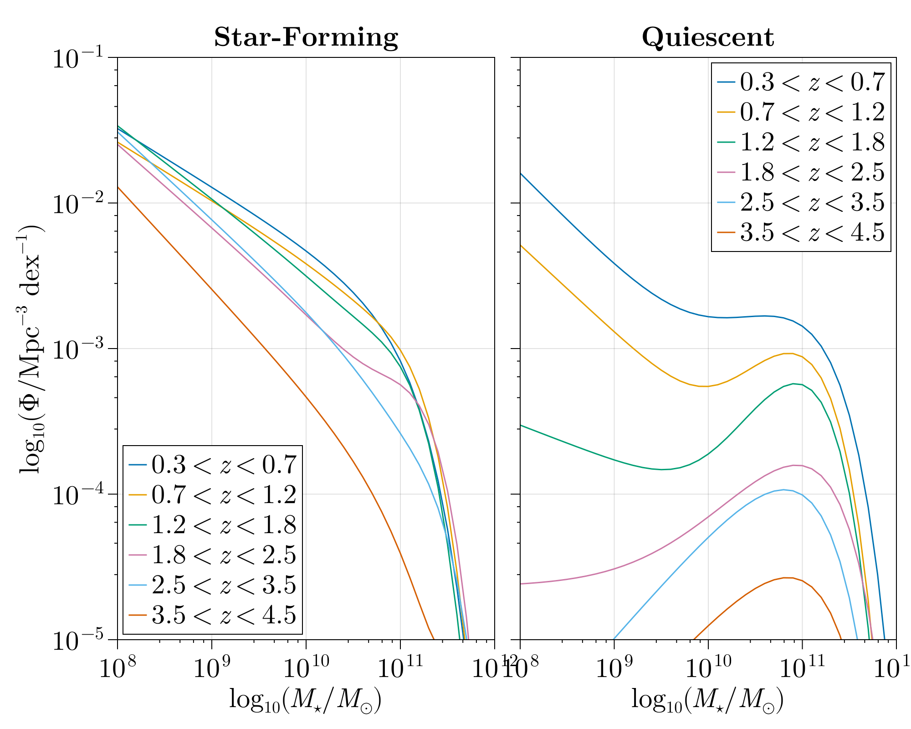
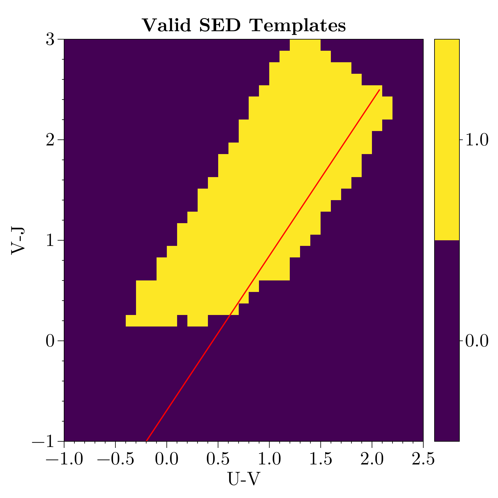

Empirical Galaxy Generator (EGG)
The Empirical Galaxy Generator (EGG) was developed by Schreiber et al. (2017) and the C++ implementation was released as open-source here under the MIT license.
In short, EGG builds galaxy catalogs by leveraging empirical scaling relations between different galaxy properties. The "root properties" for EGG are the galaxy stellar mass, redshift, and whether the galaxy is actively star-forming or quiescent. All other properties are derived from this starting point.
Stellar Mass Functions
To make predictions with EGG, we first need a realistic catalog of galaxy redshifts and stellar masses. The stellar mass functions originally used in Schreiber et al. (2017) are shown in Figure 1 of that paper with parameters given in Table A.1 for star-forming galaxies and Table A.2 for quiescent galaxies. We implement these mass functions for easy use as
GalaxyGenerator.EGG.EGGMassFunction_SF — Constant
A BinnedRedshiftMassFunction implementing the stellar mass functions used in EGG (Schreiber et al., 2017) for star-forming galaxies, see their Table A.1. Rather than using a piecewise constant mass function between redshift bins, we interpolate linearly in redshift between the two nearest mass functions.
GalaxyGenerator.EGG.EGGMassFunction_Q — Constant
A BinnedRedshiftMassFunction implementing the stellar mass functions used in EGG (Schreiber et al., 2017) for quiescent galaxies, see their Table A.1. Rather than using a piecewise constant mass function between redshift bins, we interpolate linearly in redshift between the two nearest mass functions.
These mass functions are plotted below.
using CairoMakie
using GalaxyGenerator.EGG: EGGMassFunction_SF, EGGMassFunction_Q
# Define the range of log10(Mstar) and extract redshifts
logMstar = 8:0.1:12
# Ranges of redshifts defined by Schreiber2017
z_ranges = [0.3 0.7; 0.7 1.2; 1.2 1.8; 1.8 2.5; 2.5 3.5; 3.5 4.5]
# Create the figure
fig = Figure(size=(1000,800))
# Left panel: Star-forming mass function
ax1 = Axis(fig[1, 1],
title = "Star-Forming",
xlabel = L"\log_{10}(M_\star / M_\odot)",
ylabel = L"\log_{10}(\Phi / \mathrm{Mpc}^{-3} \ \mathrm{dex}^{-1})",
xscale = log10,
yscale = log10
)
for i in axes(z_ranges,1)
z = (z_ranges[i,1] + z_ranges[i,2]) / 2
Φ = [EGGMassFunction_SF(exp10(M), z) for M in logMstar]
lines!(ax1, exp10.(logMstar), Φ, label = L"%$(z_ranges[i,1]) < z < %$(z_ranges[i,2])")
end
axislegend(ax1; position=:lb)
# Right panel: Quiescent mass function
ax2 = Axis(fig[1, 2],
title = "Quiescent",
xlabel = L"\log_{10}(M_\star / M_\odot)",
xscale = log10,
yscale = log10,
yticklabelsvisible = false # Remove y-axis labels
)
for i in axes(z_ranges,1)
z = (z_ranges[i,1] + z_ranges[i,2]) / 2
Φ = [EGGMassFunction_Q(exp10(M), z) for M in logMstar]
lines!(ax2, exp10.(logMstar), Φ, label = L"%$(z_ranges[i,1]) < z < %$(z_ranges[i,2])")
end
axislegend(ax2)
# Link y-axes of both panels
linkyaxes!(ax1, ax2)
ylims!(ax1, 1e-5, 1e-1)
xlims!(ax1, 1e8, 1e12)
xlims!(ax2, 1e8, 1e12)
fig
SED Templates
SED templates from Schreiber et al. (2017) are tabulated as a function of U-V and V-J colors. An SED template is chosen for each galaxy by finding the nearest valid template to its sampled colors. Below we show the SED template grid, where U-V vs V-J bins with a valid SED template are yellow.
using GalaxyGenerator.EGG: optlib
# Create the figure
fig = Figure(size=(800,800))
ax = Axis(fig[1, 1],
title = "Valid SED Templates",
xlabel = "U-V",
ylabel = "V-J")
# Plot the heatmap
# heatmap!(ax, optlib.buv, optlib.bvj, optlib.use; colormap = :viridis)
# heatmap!(ax, optlib.bvj, optlib.buv, transpose(optlib.use); colormap = :viridis, categorical=true)
hm = heatmap!(ax, optlib.bvj, optlib.buv, transpose(optlib.use); colormap = Categorical(:viridis))
# Plot sequence
vj = -1.0:0.1:2.5
uv = 0.65 .* vj .+ 0.45
lines!(ax, uv, vj, color=:red, linewidth=2)
Colorbar(fig[1,2], hm, size=40) # , tellheight=false, tellwidth=false)
# Display the figure
fig
Catalog Generation
The main function to compute galaxy catalogs is generate_galaxies.
GalaxyGenerator.EGG.generate_galaxies — Function
generate_galaxies(mmin, mmax, zmin, zmax, area_deg2, [filters, mag_sys]; kwargs...)Generate a catalog of galaxies by sampling from stellar mass functions within the specified mass and redshift ranges over a given sky area. Based on the EGG model of Schreiber et al. (2017).
Arguments
mmin,mmax: Minimum and maximum stellar mass in solar masses (M⊙)zmin,zmax: Minimum and maximum redshiftarea_deg2: Sky area in square degreesfilters: (Optional) Vector of photometric filters from PhotometricFilters.jl for which to compute magnitudesmag_sys: (Optional) Vector of magnitude systems from PhotometricFilters.jl corresponding to filters
Keyword Arguments
cosmo::Cosmology.AbstractCosmology: Cosmology model (default:Cosmology.Planck18)igm::IGMAttenuation: IGM attenuation model (default:GalaxyGenerator.IGM.Inoue2014)q_massfunc::RedshiftMassFunction: Mass function for quiescent galaxies (default:GalaxyGenerator.EGG.EGGMassFunction_Q)sf_massfunc::RedshiftMassFunction: Mass function for star-forming galaxies (default:GalaxyGenerator.EGG.EGGMassFunction_SF)npoints_mass::Int: Number of mass grid points for sampling (default: 100)npoints_redshift::Int: Number of redshift grid points for sampling (default: 100)poisson::Bool: Whether to add Poisson noise to galaxy counts (default: false)rng::Random.AbstractRNG: Random number generator (default:Random.default_rng())use_rng::Bool: Whether to use random sampling for galaxy properties (default: true)
Output
Returns a Vector{NamedTuple} where each element represents a galaxy with the following fields:
Basic Properties (always included)
Mstar: Stellar mass in solar masses (M⊙)z: Redshiftsfr: Star formation rate in solar masses per year (M⊙/yr)sfr_ir: Contribution of IR light to the star formation rate in M⊙/yrsfr_uv: Contribution of UV light to the star formation rate in M⊙/yrR50: Total half-light radius in kpcR50_disk: Disk half-light radius in kpcR50_bulge: Bulge half-light radius in kpcdisk_ratio: Disk axis ratio (b/a)bulge_ratio: Bulge axis ratio (b/a)PA: Position angle in degrees (between -180 and 180)BT: Bulge-to-total mass ratio (Mbulge/Mstar)Mdisk: Disk stellar mass in M⊙Mbulge: Bulge stellar mass in M⊙Tdust: Dust temperature in Kelvinfpah: Fraction of dust mass contributed by PAH moleculeslir: Infrared luminosity from 8-1000 μm in solar luminosities (L⊙)ir8: Ratio of IR to 8 μm luminosityIRX: IRX = Ratio of sfrir to sfruvOH: Oxygen abundance in solar units (12 + log(O/H))uv_disk,vj_disk: U-V and V-J colors for diskuv_bulge,vj_bulge: U-V and V-J colors for bulgevdisp: Velocity dispersion in km/s (estimated from stellar mass)
Photometry Properties (when filters provided)
R50_arcsec: Total half-light radius in arcsecondsR50_disk_arcsec: Disk half-light radius in arcsecondsR50_bulge_arcsec: Bulge half-light radius in arcsecondsMgas: Gas mass in M⊙MH2: Molecular hydrogen mass in M⊙Mdust: Dust mass in M⊙mag_abs: Absolute magnitudes in each filtermag_abs_disk: Absolute disk magnitudes in each filtermag_abs_bulge: Absolute bulge magnitudes in each filtermag_obs: Observed magnitudes in each filter (including distance modulus)mag_obs_disk: Observed disk magnitudes in each filtermag_obs_bulge: Observed bulge magnitudes in each filterλ: Wavelength array in Angstromssed: Spectral energy distribution in erg/s/cm²/Å
Notes
- Galaxies are sampled from separate mass functions for star-forming and quiescent populations
- The number of galaxies is determined by integrating the mass functions over the specified mass and redshift ranges and correcting for the
area_deg2 - When photometry is requested, SEDs are assigned based on sampled U-V and V-J colors from the Schreiber et al. (2017) library
EGG References
This page cites the following references:
- Schreiber, C.; Elbaz, D.; Pannella, M.; Merlin, E.; Castellano, M.; Fontana, A.; Bourne, N.; Boutsia, K.; Cullen, F.; Dunlop, J.; Ferguson, H. C.; Michałowski, M. J.; Okumura, K.; Santini, P.; Shu, X. W.; Wang, T. and White, C. (2017). EGG: hatching a mock Universe from empirical prescriptions. A&A 602, A96, arXiv:1606.05354 [astro-ph.IM].